Replacing my iPhone camera with a Nikon Coolpix L24
August 4, 2023
–
Earlier in 2023 I decided to try and switch from using my iPhone camera to using one of my old Nikon point and shoot cameras from 2012.
I started doing this in April of 2023 and ended up documenting most of spring and summer on my point and shoot. So now, I want to share some images from my I took! There are a lot of really good ones I’m not sharing, but some of my favourites that don’t include (overly) distinguishable views my friends'/other people's faces are below.
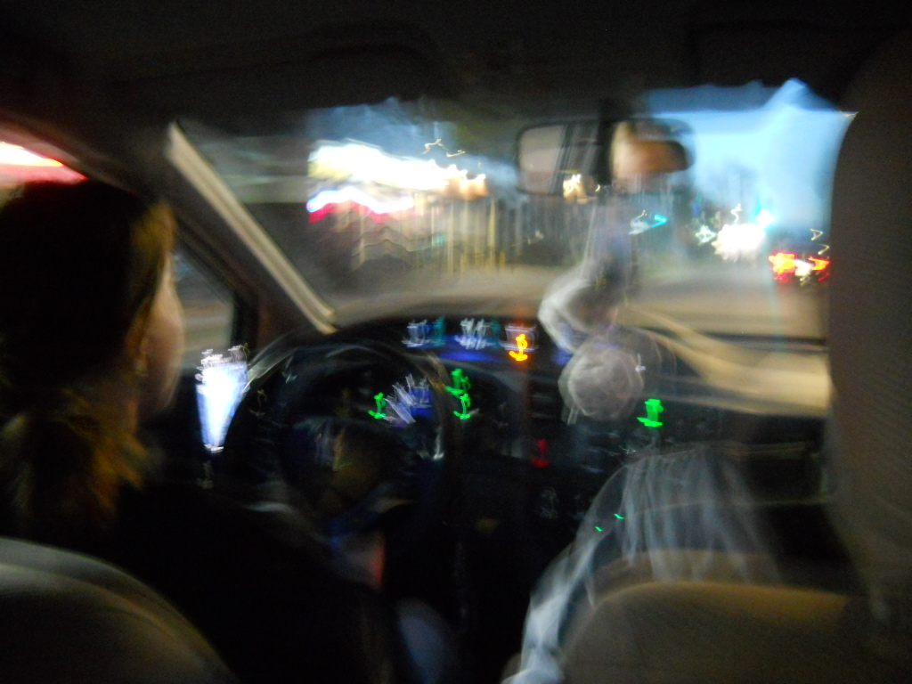
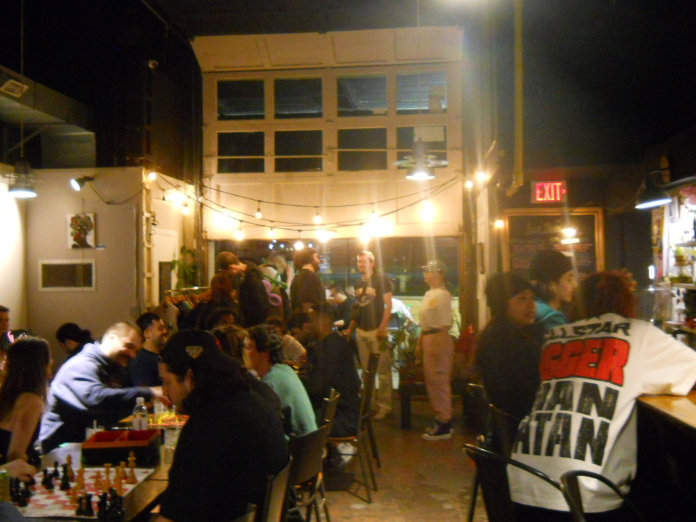
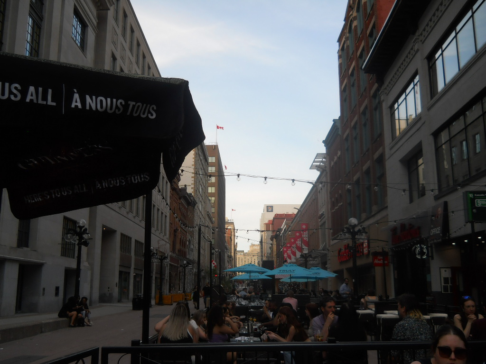
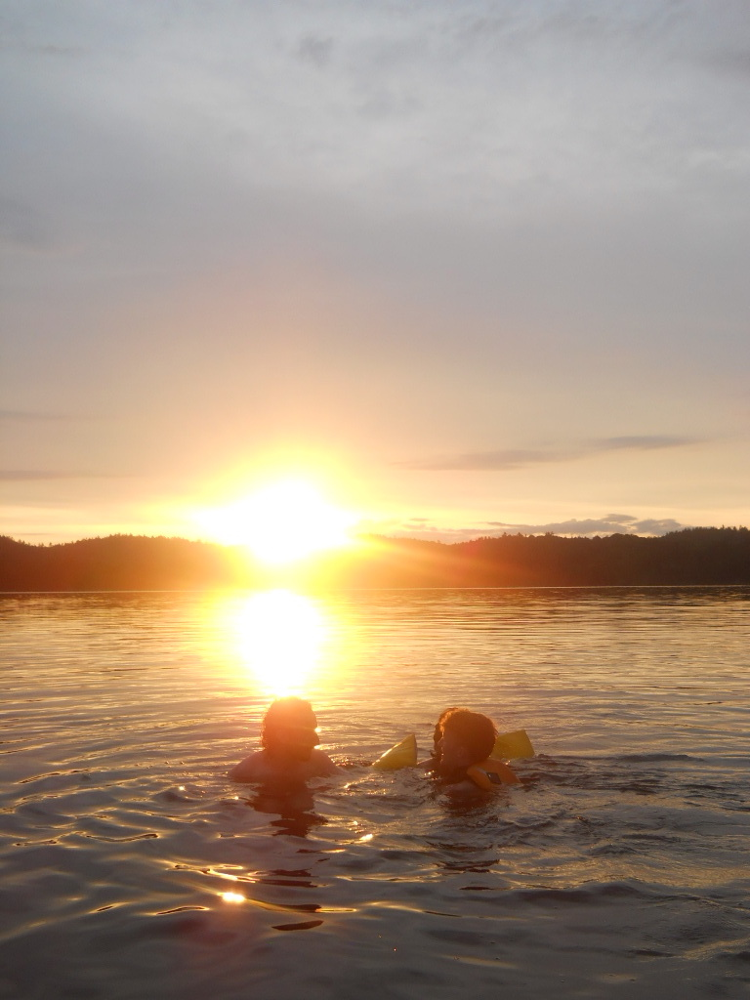
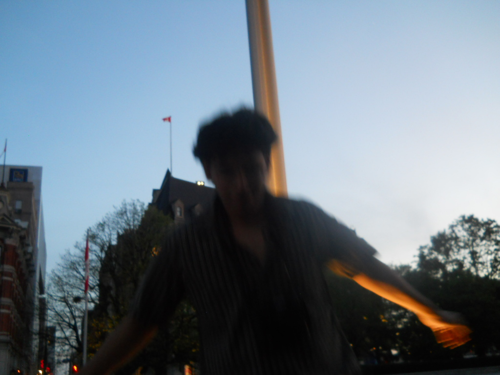
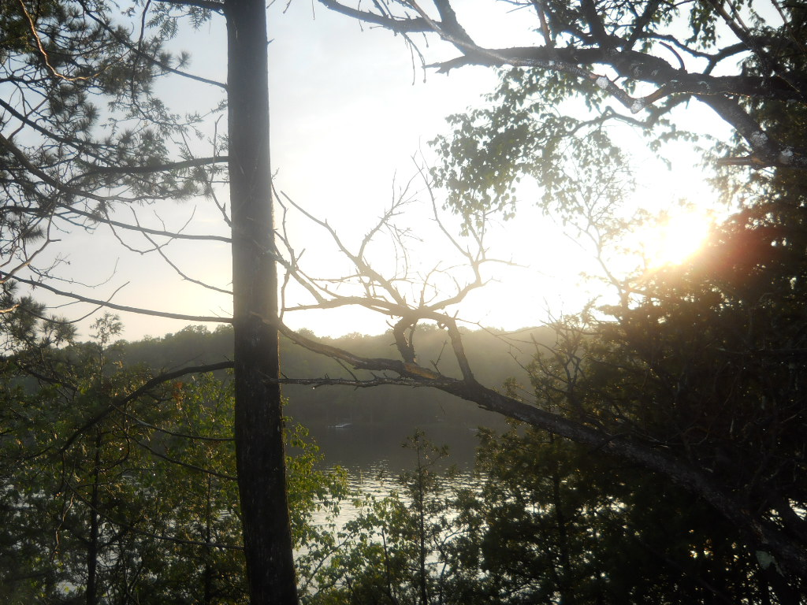
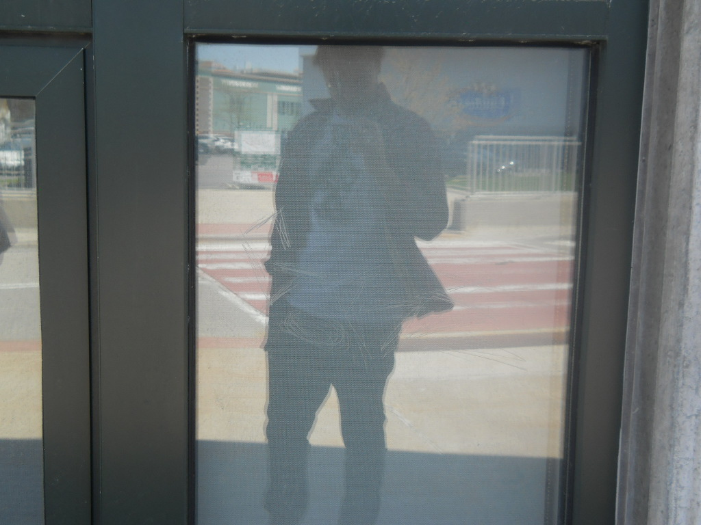
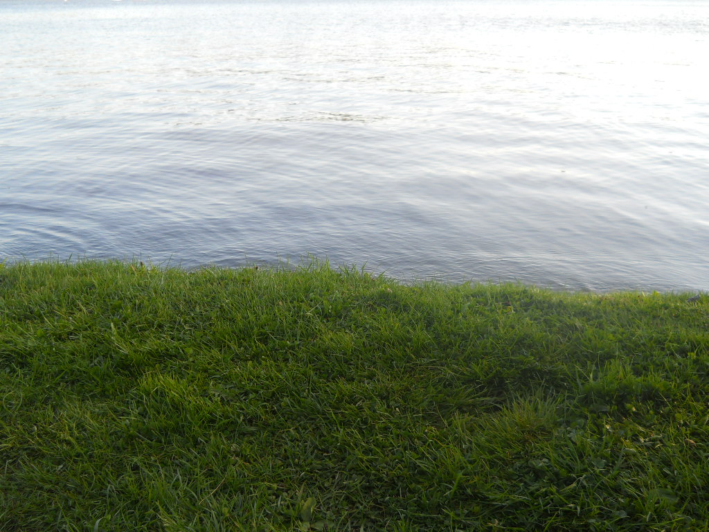
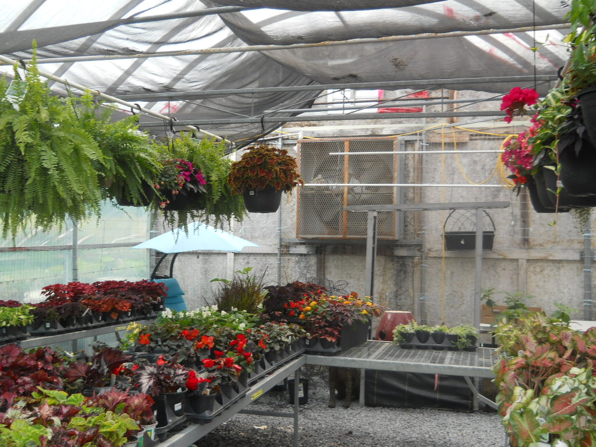
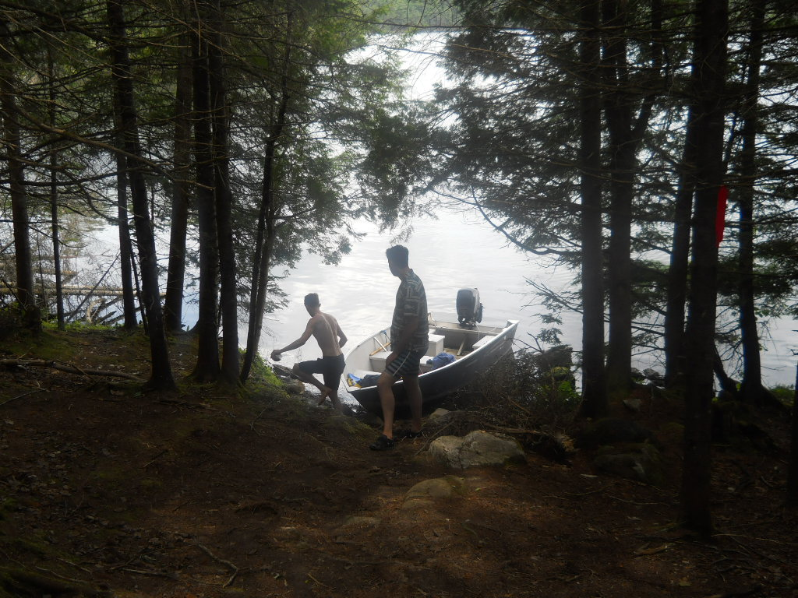
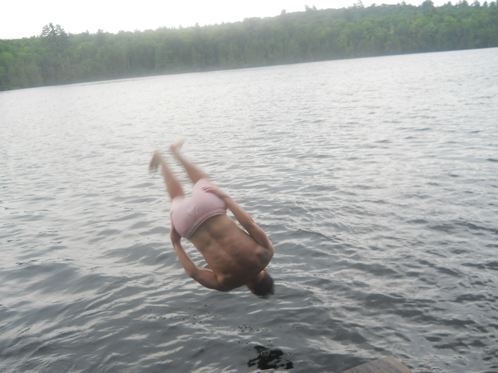